IoM v0.1.0 代替CobaltStrike的最后四块碎片
经过几个月的时间，带来了四大全新组件, 以及十几个较大的功能性更新与数百个修复与优化。
与之前一样，在更新公告中的大部分内容都将会在community版本中提供
四大新组件:
- 基于vscode extension的GUI客户端
- 基于lua脚本语言的插件系统以及迁移了数百个插件的基础插件生态
- 基于rem实现的代理/隧道功能组
- 类似BeaconGate的动态函数调用和Ollvm
当然目前与CobaltStrike对比不免有些不自量力(因缺少大量实战测试修复各种bug)。但这也代表IoM主体功能的阶段性成果。IoM不再是一个实验室中的demo， 而是能初步用于实战的工具。
CobaltStrike最大的护城河是丝滑的GUI客户端， 稳定的beacon，以及丰富的插件生态。以至于抹平其OPSEC上的劣势。 而现在CobaltStrike的二开止步4.6， 破解版本停滞在4.10， 主流的CobaltStrike的使用者逐渐远离了其最新版本。 这让IoM有机会成为CS的备选品(我们承认距离代替CS还有不小的距离)。
新组件¶
GUI 客户端¶
GUI 使用说明见 https://wiki.chainreactors.red/IoM/guideline/deploy/#%E5%AE%89%E8%A3%85gui
showcase
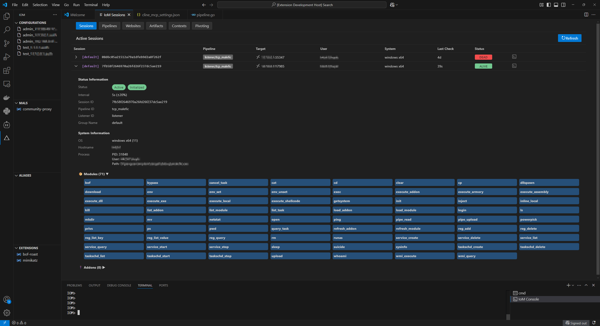
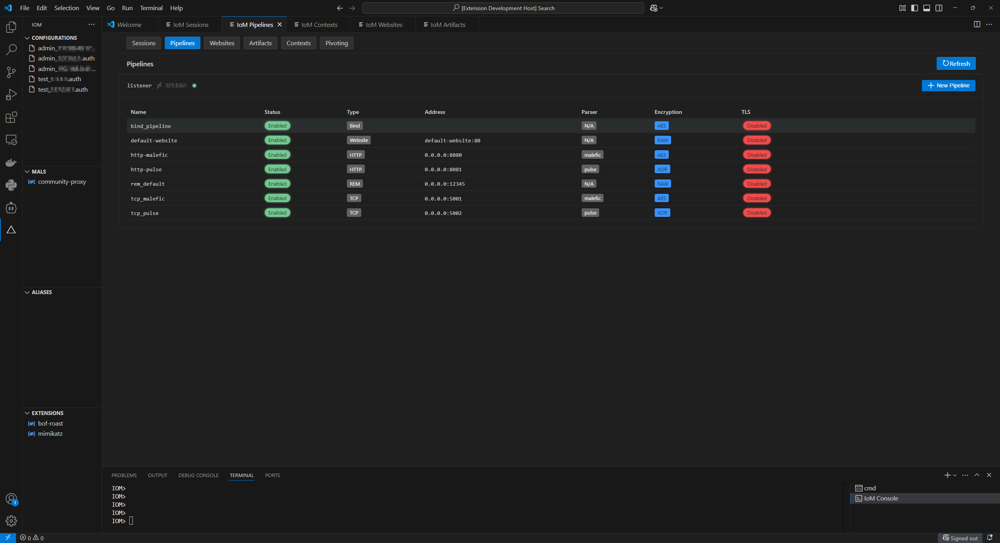
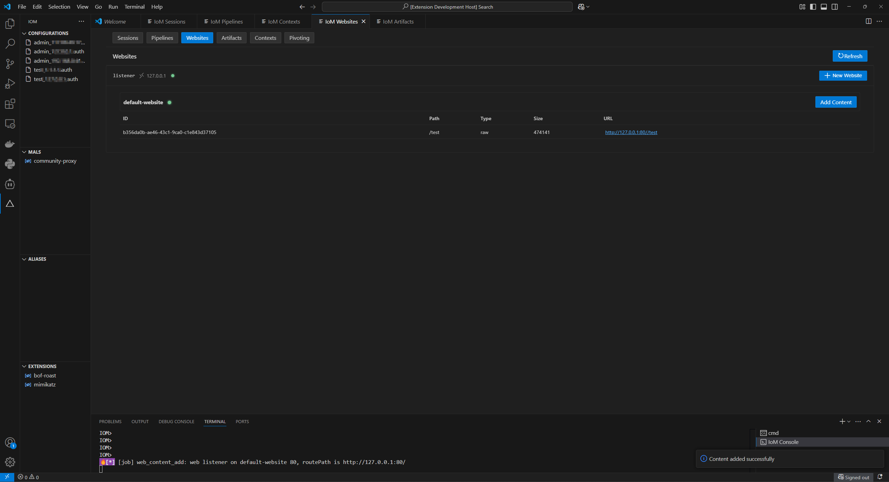
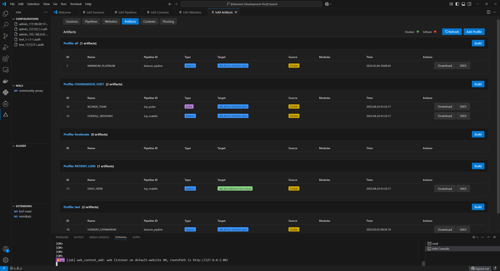
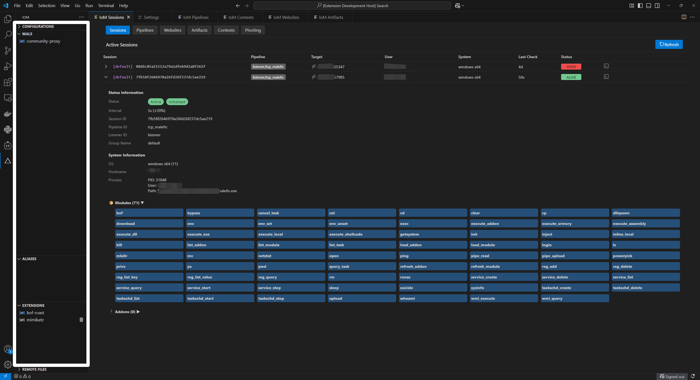
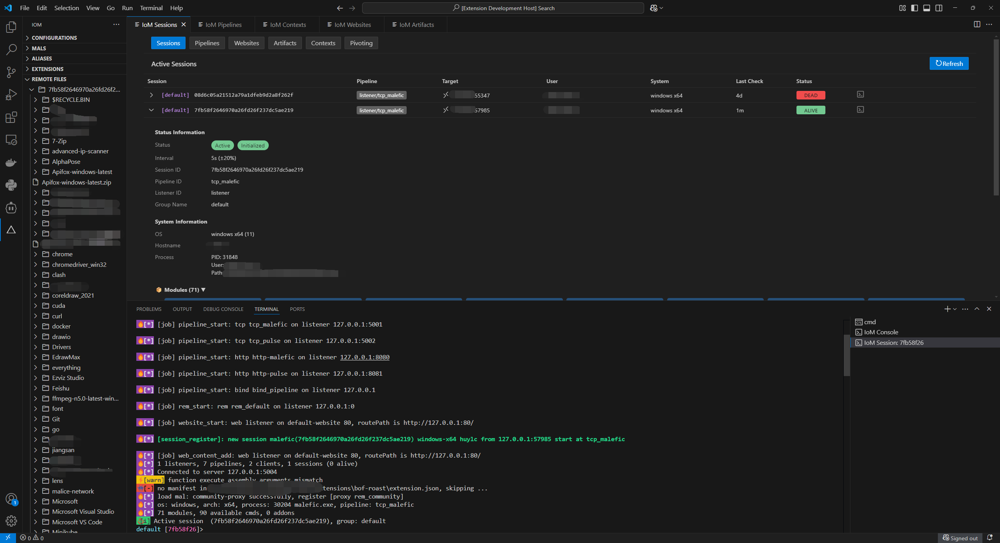
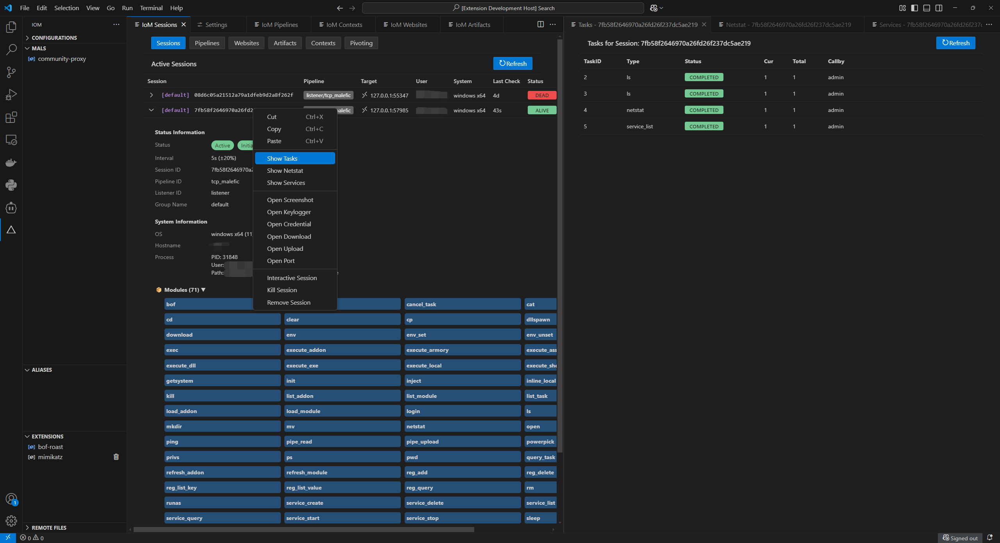
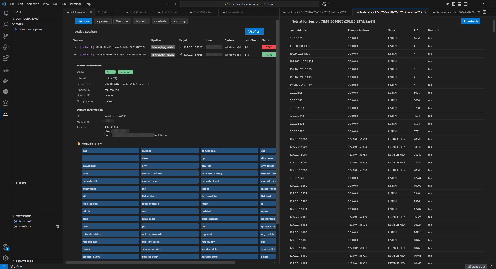
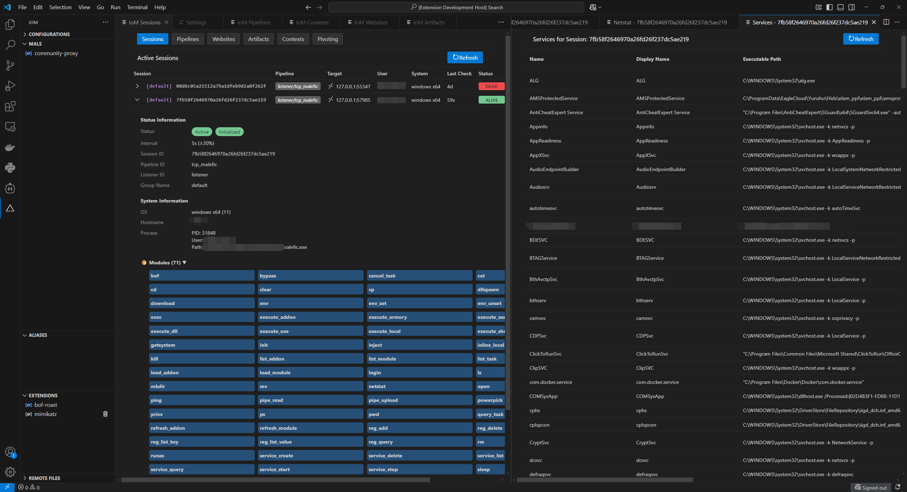
Mals 插件生态¶
https://github.com/chainreactors/mal-community
在v0.0.3中， 我们第一次提供了mal-community。 现在回看， 当时的实现较为粗糙， 有非常多的bug与设计缺陷， 经过两个版本的打磨。 我们可以发布mals 1.0版本了。
快速入门mals : https://chainreactors.github.io/wiki/IoM/manual/mal/quickstart/
已经实现/迁移的插件包:
- lib
- noconsolation, https://github.com/fortra/No-Consolation
- SharpBlock, https://github.com/CCob/SharpBlock
- common (基础工具)
- operatorskit, https://github.com/REDMED-X/OperatorsKit
- remoteopsbof, https://github.com/trustedsec/CS-Remote-OPs-BOF
- situationalbof, https://github.com/trustedsec/CS-Situational-Awareness-BOF
- chainreactor, gogo/zombie/spray 等 chainreactor 的工具
- 大量其他独立工具
- elevate (提权)
- persistence (权限维持)
- proxy (网络/代理)
- domain (域渗透)
- move (横向移动)
我们迁移了数百个CobaltStrike的插件功能， 完成了mals社区的起步阶段的基础设施建设， 这些功能覆盖绝大多数常用的CobaltStrike的使用场景。
也是对IoM基础能力的一次完整的测试。这些插件大部分经过我们的简单测试， 确保其至少能运行在implant中不panic以及基本功能正常。
这意味着mals与malefic功能上能完全代替CobaltStrike的aggresive script， 并且提供了细粒度更高的API。
我们期待mals能在C2社区中有一席之地
mals中间层¶
通过 https://github.com/chainreactors/mals 实现了一个grpc与golang的中间层，可以通过中间层将各种内部函数/grpc等对外暴露给lua， yaegi等脚本语言。 目前以lua为主， 实现了一套高细粒度的api，以及自动文档生成。
REM¶
https://github.com/chainreactors/rem-community
rem是全场景代理/隧道工具. 提供了全访问的网络侧功能。 例如正反向代理，端口转发，多传输层信道， 级联等等功能。
v0.1.0 全面接入了rem 它会在listener，client， implant发挥不同的作用。 我将分别介绍
rem for pipeline¶
新增rem配置项， 监听rem console 服务

这个服务可以给普通的rem二进制文件直接使用， 也可以让client与implant连接。
不再需要下载独立的rem程序， IoM的server就可以当作rem的服务端， 并提供了更多的管理功能。
rem for implant¶
提供了3种加载rem的方式。
- 通过.a 文件静态编译(不支持windows msvc)
- 通过 dll/so 反射动态加载
- 通过 pe loader 加载exe/elf。(pe to shellcode也算作此列)
这三种方式覆盖了绝大多数使用场景， rem虽然是golang编写的， 但是可以在编译时静态连接/反射动态加载到implant中。 可以作为独立的工具， 和其他二进制程序一样被pe loader加载。 在OPSEC上有略微的不同， 可以参照对应的命令的helper理解其实现原理。
常用的tunnel/proxy功能¶
常见的正反向端口转发, 正反向代理都可以，以及类似CS的rportfwd_local以及CS都没有的portfwd_local都可以基于rem实现。完成常见proxy/tunnel 的全覆盖


implant rem transport¶
除了运行rem模块搭建隧道，还支持重载implant的信道，实现 rem over implant。 让rem在网络侧对抗发光发热， rust在网络相关的玩法上略逊于golang。
通过rem静态链接库的FFI接口在implant编译时链接， 实现重载传输层，复用rem能够实现的一切流量层特性。
这也是IoM在之前的版本中都没有提供除了tls之外的任何传输层的原因，所有网络侧的对抗都可以交给rem实现

rem for client/mals¶
rem本身只需要通过单行命令实现所有功能， 而IoM的client上的rem相关命令组一定程度上提供了rem的交互式命令行管理工具。 可以在client上管理已有的连接，新建隧道， 修改配置等。
最常见的用法已经封装在命令行中， 但是还有一些rem特有的高级用法，通过mal-community中的community-proxy动态注册。

而client本身也支持接入 listener ↔ implant 构建的网络， 实现网络测的三端打通。
小结¶
总的来说， 我们可以在client中通过一组命令操控server管理rem的console， 也可以直接基于rem在implant实现各种 proxy/tunnel的功能。
implant OPSEC¶
关于OPSEC的部分我们会保持闭源， 通过提供静态链接库公开基础可用版本。
CobaltStrike有三个大的OPSEC定制切面， 分别是UDRL，sleepmask 以及最新的BeaconGate。我们正在逐步实现CS的这些OPSEC功能， 以及更多的CS没有的OPSEC选项。
Beacon Gate¶
在设计初期， IoM 对各类 API 的调用都是为一切可配置可调控而设计的， 虽然并未以开源形式公开， 但我们发现其与 Beacon Gate 的设计不谋而合， 这也意味着我们在内部可以做到同样的操作， 用内置各类动态可调控 API 为 BOF 和 Beacon 进行武装
在v0.1.0版本中， BeaconGate得到了全面升级或许我们得给这个功能起一个新的名字。
该功能暂时仅提供给Professional版本。 后续将会从中切割一个与CobaltStrike的beacongate类似的功能提供给community。
Ollvm¶
ollvm是rust静态免杀的通用解决方案之一。 面对目前某些杀软基于特征的静态文件识别方案， 如何快速改变内部结构是一个非常有趣的话题， ollvm 便是一种非常有效而有力的手段， 通过添加 pass， 在增加逆向成本的同时， 我们也可以快速增加程序的信息熵， 以进行静态特征上的规避。
v0.1.0 中， 我们提供了集成了ollvm的docker镜像( ollvm16 + rust1.74.0 toolchain, 此外还提供了 ollvm17 + rust1.74.0 的 Dockerfile)以及malefic-mutant编译工具。带来了基础版本的ollvm。 community中的ollvm为开源版本的工程化实现, 特征与特性与开源版本一致， 但是大大简化了环境配置的复杂性。
- 感谢@https://github.com/joaovarelas/Obfuscator-LLVM-16.0 提供的
Dockerfile及ollvm16 patch - 感谢@https://github.com/DreamSoule/ollvm17 对
ollvm17的支持 - 感谢@https://github.com/61bcdefg/Hikari-LLVM15-Core/ 对平坦化的支持
build:
zigbuild: false
ollvm:
enable: true
bcfobf: true
splitobf: false
subobf: false
fco: false
constenc: false
malefic-mutant build malefic
IoM for AI (Preview)¶
这是隐藏的第五个新组件，但是功能暂时还没有稳定，所以不算是正式发布。
AI给IoM的开发提供了非常巨大的帮助， 有不少模块的原型都是AI实现的。
并且在设计早期， 我们就幻想过如何将AI应用到C2中， 之前一直没有特别好的方案， 而现在我们有了全新的工具和思路。
刚才提到过我们的GUI基于vscode插件实现，而AI编程也很难离得开vscode， 如cursor、cline，trae，windsurf 等工具都离不开vscode。可以说vscode 大概率是未来AI编程的试验中心。 IoM GUI在这个AI 驱动的自动化渗透领域中有先天的优势。
而这段时间内，出现了MCP协议， 作为AI与传统工具的桥梁， 让我们可以更快的打通其间的壁垒， 让我们不再需要自行实现一个agent框架，直接将知识和能力都暴露给AI， 让AI根据需求自行调用。
该功能还处于于早期测试阶段，会在nightly release中发布
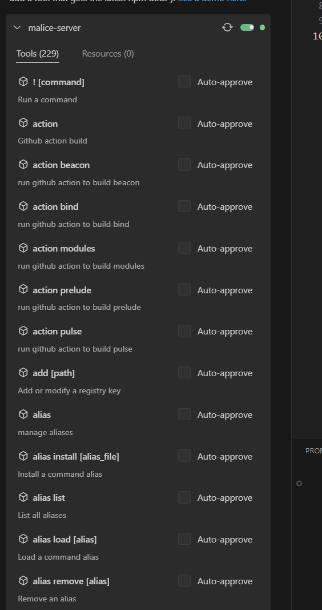
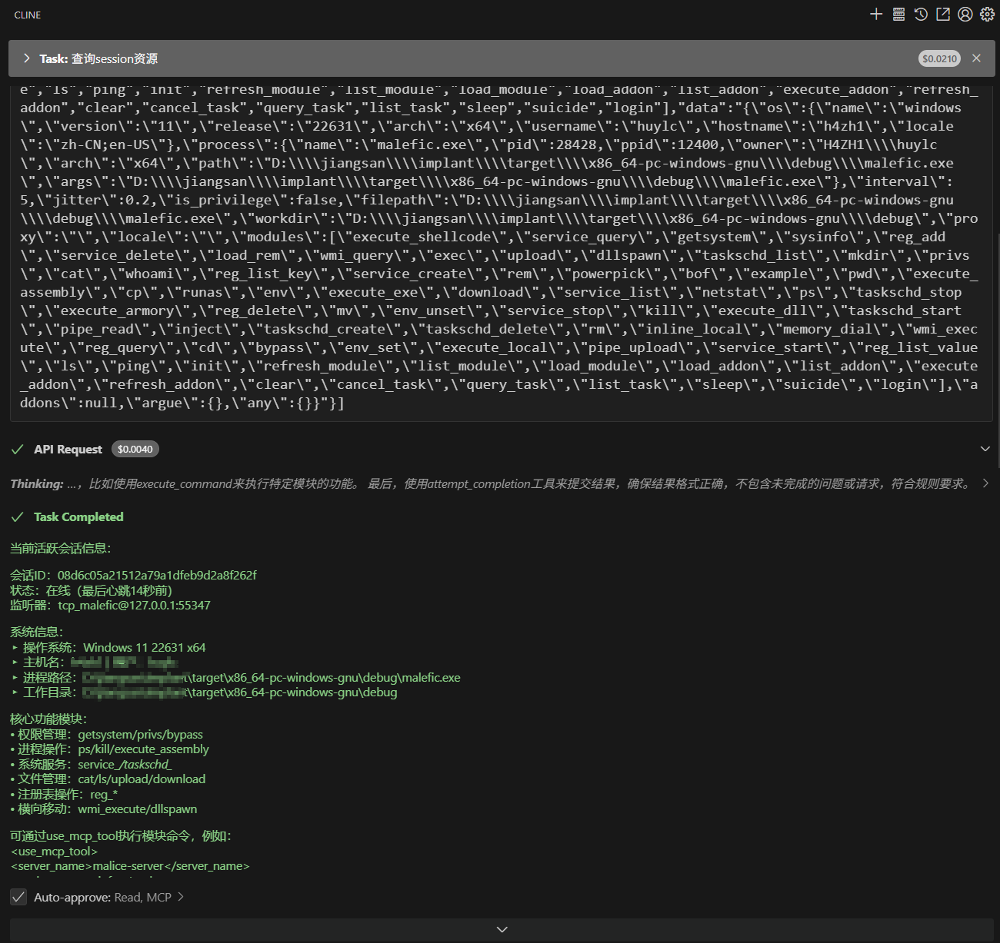
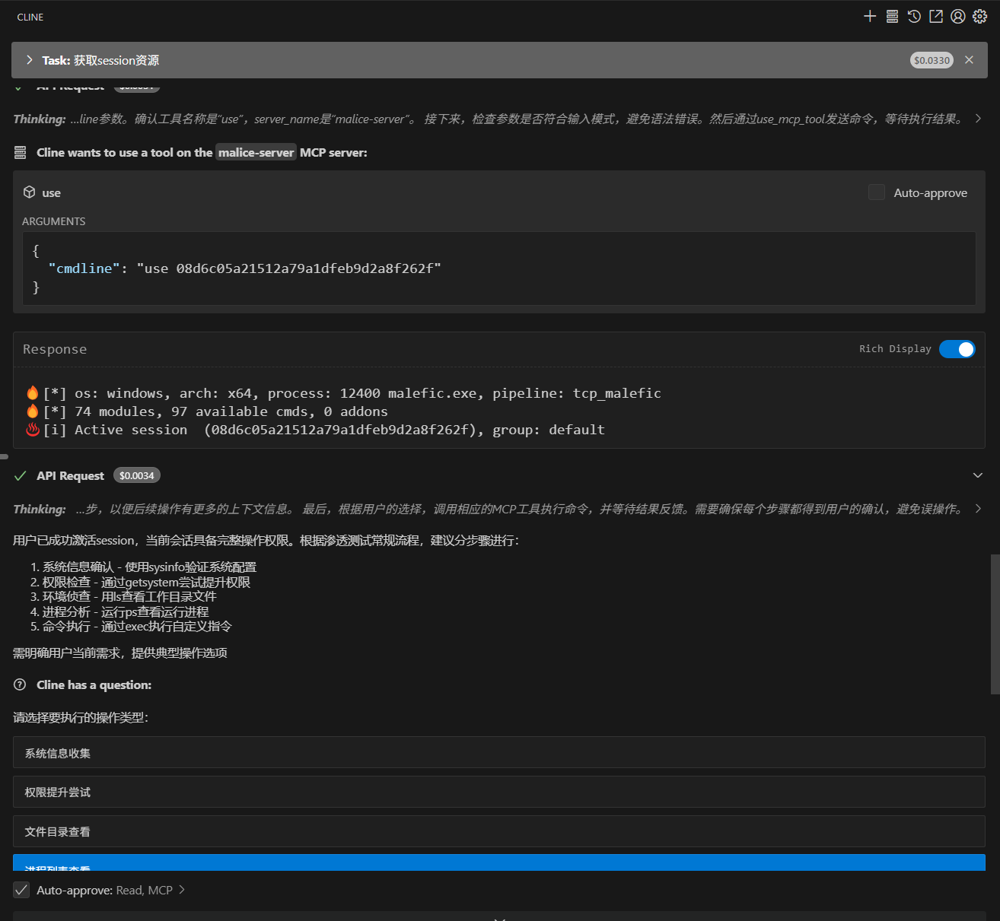
更新日志¶
(server) Context 重构¶
为了管理可复用的数据，提供了一组api保存渗透过程中需要重复使用的常见数据。

(server) donut 重构¶
之前我们尝试自行实现了 https://github.com/chainreactors/malefic-srdi ， 但是RDI的功能并不止PE to shellcode， 还有大量各种各样的功能, 最后我们选择了妥协。 后续将采用二开的donut实现。 这里 - 感谢@howmp 的 https://github.com/howmp/donut_ollvm - 感谢@howmp 将malefic-srdi中TLS的解决方案移植到了zig。 - 感谢@zema1 将TLS的解决方案从zig移植到了donut - 感谢@wabzsy的 https://github.com/wabzsy/gonut 基于donut 1.1实现了golang版本的donut前端
又进行了大量的改造：
- 自动化 ollvm 编译
- 修复多个gonut的错误
- 将gonut升级到适配donut 1.1
- 注册到IoM的client与server的各个使用场景中
- 使用saferwall/pe代替Binject/debug , 更稳定的pe解析库
最终成功呈现在 https://github.com/chainreactors/malice-network/tree/dev/external/gonut 中
(server) http pipeline¶
实现了http pipeline的基础功能, 能自定义基本的特征。 并且将原本pulse http协议上线的相关功能从website迁移到http pipeline中。
现在http pipeline负责pulse和malefic beacon的http协议交互，website现在只负责挂载文件。
(client) 命令行UI美化¶
flag分组展示 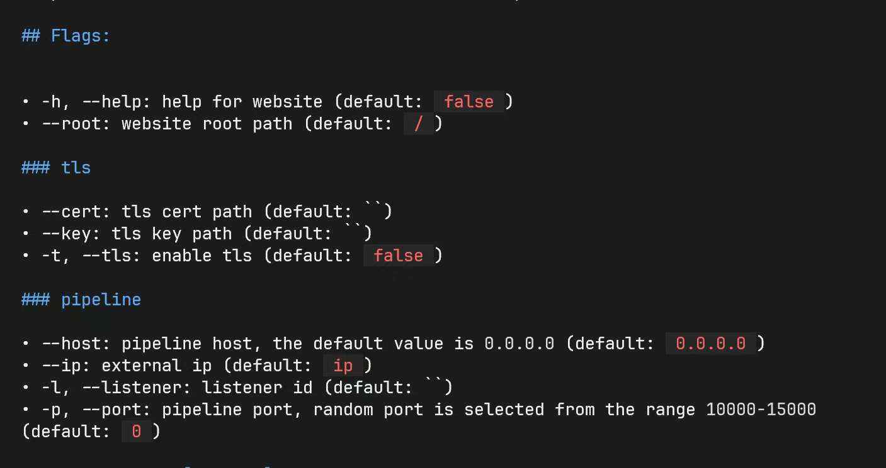
OPSEC标记，颜色标记，ATT&CK标记

命令行help细节

(implant) 支持打包与释放文件¶
implant添加了pack相关配置， 可以指定打包文件的路径与释放路径， 并在释放后自动打开文件。

(implant) 重构资源文件¶
通过 embed-resource 库(仅编译时引入)实现更多的资源文件功能。 并支持gnu+msvc(原先只支持msvc)
例如在启动时申请管理员权限或者UAC权限

(implant) 支持win11 24H2及以后的RunPE¶
不知道是不是微软安全团队发力， 在 win11 24H2 版本中， 如果各位使用 Process Hollowing， 将会得到这样的报错 0xc0000141
如果各位感兴趣，可以查看hasherezade 的精彩分析
我将在这里简要介绍原因及解决方案
为避免部分读者对 Process Hollowing 有些陌生， 因此我会简单介绍一下该技术
Process Hollowing 顾名思义就是镂空一个正常进程， 披着该进程的外皮执行我们的代码， 因此我们需要 stop 住原本的进程启动逻辑， 释放掉系统原本分配的原进程内存， 将我们的进程装载进该进程中， 修改进程上下文以替换入口点。 当然， 也可以不释放内存， 直接分配一块新内存， 再修改对应上下文信息
但这也引发了另一个问题， 我们所分配的内存皆是 private 的内存，而非正常加载时的 image 内存， 因此微软在这次更新中新增了对该段内存的 check， 其使用 zwqueryvirtualmemory 以及一个新参数 MemoryImageExtensionInformation 来检测是否是合法内存， 从而阻止我们原本的攻击链条
因此，解决方案也呼之欲出了，我们可以简要将其分为两种
* 让我们分配出 MEM_IMAGE 的内存
* 对函数进行 hook 来绕过
首先是第一类方法， 在对抗中， 早已出现了大量的Process Hollowing 变体， 比如
当然， 也有更加简单粗暴的方案： hook， 由于该防御方案位于 r3 层， 因此进攻和防守方显得十分公平， 解决起来也异常简单
当然， 除了这里还有一处 NtManageHotPatch 函数需要处理， 如果各位感兴趣可以参考和阅读我上面贴出的文章一窥究竟 :)
(implant) PELoader 修复¶
在之前的版本中， 由于对某些结构的理解不够深入， 因此导致了某些区段并没有正确修复， 现已加入套餐
- 通过实现同等于
ntdll!RtlpInsertInvertedFunctionTableEntry的方法支持了C++ Exceptions - 修复了
IMAGE_DIRECTORY_ENTRY_DELAY_IMPORT表恢复错误的问题 - 修复了某些情况下加载
PE时读取非对齐内存panic的问题
(implant) 去除外部依赖库¶
在早期版本中， 为了快速实现功能， 引入了大量第三方库， 这些库会引入更多不必要的库和特征， 并且会导致我们无法定制每个细节的OPSEC。
所以在此次更新中， 尽可能去掉了所有不必要的库。目前仅剩下wmi依赖了@lz520520 修改后的库。 不过在后续更新中应该也会去除， 完全本地化。 并且将会实现一套类似BeaconGate的机制增强这些基本功能的OPSEC
(implant) 运行时解耦¶
在早期版本中， malefic 异步运行时基于tokio实现， 后来为了尽可能缩减依赖库， 替换为了async-std。 但因为async-std的停止更新以及3rd插件的引入。 我们对异步运行时做了解耦。 现在可以在三种异步运行时中任意选择一个， 用来适配不同的插件场景.
当前支持的异步运行时：
- tokio
- async-std
- smol
可以在 implant的config.yaml 中修改
implants:
runtime: tokio
(implant) implant autorun¶
在v0.0.3中就引入了malefic-prelude.
这个功能是基于 yaml 2 protobuf实现的自动化命令预编排。 可以实现在启动时不进行任何交互就完成权限维持，反HOOK， 反DEBUG，杀软检查等功能。
现在我们给beacon也加入了这个功能， 不再必须分阶段实现。
可以在编译时编译到beacon中， 在beacon启动时自动执行预编排的任务。
implants:
autorun: "persistence.yaml"
persistence.yaml:
-
name: bof
body: !ExecuteBinary
name: addservice
bin: !File "addservice.o"
(implant) 新增3rd module crate¶
为了实现内置的rem， 我们引入了3rd module。
在这个module集合中， 不再限制外部依赖库的使用， 后续的rustdest, keylogger或者各种需要依赖外部rust库的功能都会放到这里。
3rd module 默认不会编译到beacon中， 通常作为hot load module使用。 如果想要直接编译时打包可以修改config.yaml
implants:
modules:
- "full"
enable_3rd: false
3rd_modules:
- "full"
当然我们不建议这么做， 因为光引入了简单的http client。 体积就增加了数百K。 可以根据自己的需求修改
Fixs & Optimizations¶
- [ci] github action 因为某些库的自动依赖更新导致不适配1.74 编译失败
- [ci] 添加了nightly release， 每天自动发布最新版
- [server] event乱序bug
- [server] 数据库结构大量改动，需要重建数据库， 从这个版本开始，后续将会实现自动化数据库迁移， 就算版本更新也不用担心数据丢失
- [client] 更新底层readline与console
- [client] 添加ClientGroup mals函数组, 添加了一组与cli交互的辅助函数，例如各种命令行补全
- [client] event format 重构， 现在将会在server format后再发送到各端
- [implant] 特定情况下implant 发送header中断导致的挂死
- [implant] 重构pipe
- [implant] 去除绝大部分的async_std 依赖， 使用futures代替
- [implant] mutant log 格式美化
- [implant] 修复了PELoader某些情况下加载错误的问题
- ......
End¶
原本计划从v0.0.4直接跳跃到商业化版本, 但现实遇到的困难比预期多得多，我们不得不先发布一个中间版本 v0.1.0。而这个版本也将作为可预见未来内的最后一个大版本，后续会有一些小的改动和修复。 等待从社区中获取足够的使用反馈， 才会进行下一步的开发。 可以尝试将IoM v0.1.0作为一个稳定版本投入生产， 期待你们的反馈！
也有一个相对遗憾的消息， 受限于资源和精力， v0.1.0 可能将是未来一段时间内的稳定版本。 因为实现roadmap中v0.1.0需要消耗的资源比预计的更多，也因为各种其他原因，我们无法按照预期实现v0.1.0的所有计划内的功能。
如果您认可我们的产品， 欢迎联系我们咨询关于IoM Professional的相关信息。 联系方式: m09ician@gmail.com